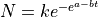

Model proliferation data with Gompertz law¶
Live cell population growth is modeled using the Gompertz law: .
import sys,os
import numpy as np
import pandas as pd
import scipy.optimize as optim
import functions
import glob
from scipy.stats import gamma
import math
import matplotlib.pyplot as plt
from matplotlib import rcParams
Specify study name and the casename (prefix for the proliferation data files).
cwd = os.getcwd()
data_directory = './data/Study1'
os.chdir(data_directory)
casename = 'growth_'
data_files = glob.glob(casename+'*.csv')
all_files = {}
times = []
for ff in data_files:
t = float(ff.lstrip(casename).rstrip('.csv'))
times.append(t)
all_files[int(t)] = ff
times.sort()
p_array = np.zeros(shape=(len(data_files),10))
column_names = ['T','k','kerr1','kerr2','a','aerr1','aerr2','b','berr1','berr2']
parameters = pd.DataFrame(p_array,index=[i for i in range(0,len(data_files))],columns=column_names)
column_names = ['CT','T1','T1err1','T1err2','T2','T2err1','T2err2']
inflection_times = pd.DataFrame(np.zeros(shape=(len(data_files),7)),index=[i for i in range(0,len(data_files))],columns=column_names)
report_inflection_times = pd.DataFrame(np.zeros(shape=(len(data_files),7)),index=[i for i in range(0,len(data_files))],columns=column_names)
for idx in range(0,len(times)):
t = times[idx]
filename = all_files[int(t)]
pop_series = pd.read_csv(filename)
time_array = pop_series['Time (h)'].to_numpy()
time_array = time_array.astype(float)
time_size = time_array.shape[0]
stack_size = time_size*(len(pop_series.columns.values)-1)
time_stack = np.zeros(stack_size,)
data_stack = np.zeros(stack_size,)
time_l, data_l = [], []
ik = 0
n = len(pop_series.columns) - 2
for col in pop_series.columns.values[1:]:
this_data = pop_series[col].to_numpy()
for p in range(0,this_data.shape[0]):
if this_data[p]==this_data[p]:
time_l.append(time_array[p])
data_l.append(this_data[p])
time_stack = np.array(time_l)
data_stack = np.array(data_l)
max_d = np.max(data_stack)
max_inf_time = time_l[data_l.index(max_d)]
m_d = max(data_l)
t_inf = time_l[data_l.index(m_d)]
check = 1
iter = 0
k_up, k_low = 2.0*m_d, 0.0
b_up, b_low = 1.0/(time_array[1]-time_array[0]), 1.0/(time_array[-1]-time_array[0])
a_up, a_low = max_inf_time*b_up, 0.0
while check==1:
all_bounds = (np.array([k_low,a_low,b_low]),np.array([k_up,a_up,b_up]))
popt, pcov = optim.curve_fit(functions.gompertz,time_stack,data_stack,bounds=all_bounds)
perr = np.sqrt(np.diag(pcov))
check = 0
iter += 1
parameters.loc[idx,'T'] = t
parameters.loc[idx,'k'] = popt[0]
parameters.loc[idx,'a'] = popt[1]
parameters.loc[idx,'b'] = popt[2]
parameters.loc[idx,'kerr1'] = perr[0]
parameters.loc[idx,'aerr1'] = perr[1]
parameters.loc[idx,'berr1'] = perr[2]
parameters.loc[idx,'kerr2'] = perr[0]
parameters.loc[idx,'aerr2'] = perr[1]
parameters.loc[idx,'berr2'] = perr[2]
times_set = np.linspace(1,1000,10000)
t1, t2 = functions.compute_gompertz_inflections(times_set,popt[0],popt[1],popt[2])
inflection_times.loc[idx,'CT'] = t
inflection_times.loc[idx,'T1'] = t1
inflection_times.loc[idx,'T2'] = t2
report_inflection_times.loc[idx,'CT'] = t
report_inflection_times.loc[idx,'T1'] = t1
report_inflection_times.loc[idx,'T2'] = t2
T1_error = t1*(abs(perr[1]/popt[1]) + abs(perr[2]/popt[2]))
up, low = functions.get_CI(t1,T1_error)
inflection_times.loc[idx,'T1err1'] = up
inflection_times.loc[idx,'T1err2'] = min(low,t1)
report_inflection_times.loc[idx,'T1err1'] = max(t1 - low,0)
report_inflection_times.loc[idx,'T1err2'] = t1 + up
T2_error = t2*(abs(perr[1]/popt[1]) + abs(perr[2]/popt[2]))
up, low = functions.get_CI(t2,T2_error)
inflection_times.loc[idx,'T2err1'] = up
inflection_times.loc[idx,'T2err2'] = min(low,t2)
report_inflection_times.loc[idx,'T2err1'] = max(t2 - low,0)
report_inflection_times.loc[idx,'T2err2'] = t2 + up
rate_times = np.linspace(0.0,np.max(time_array),200)
fit_N = functions.gompertz(rate_times,popt[0],popt[1],popt[2])
total_data = np.zeros(shape=(rate_times.shape[0],2))
total_data[:,0] = rate_times
total_data[:,1] = fit_N
np.savetxt('fit_'+filename,total_data,delimiter=',')
parameters.rename(columns={'kerr1': '+','aerr1': '+', 'berr1': '+'}, inplace=True)
parameters.rename(columns={'kerr2': '-','aerr2': '-', 'berr2': '-'}, inplace=True)
inflection_times.rename(columns={'T1err1': '+','T1err2': '-'}, inplace=True)
inflection_times.rename(columns={'T2err1': '+','T2err2': '-'}, inplace=True)
report_inflection_times.rename(columns={'T1err1': 'Lower CI','T1err2': 'Upper CI'}, inplace=True)
report_inflection_times.rename(columns={'T2err1': 'Lower CI','T2err2': 'Upper CI'}, inplace=True)
parameters.to_csv('gompertz_parameter_summary.csv',index=None)
inflection_times.to_csv('gompertz_inflection_points_summary.csv',index=None)
report_inflection_times.to_csv('gompertz_inflection_points_report.csv',index=None)
data_files = glob.glob(casename+'*.csv')
fit_data_files = glob.glob('fit_'+casename+'*.csv')
all_files = {}
times = []
for ff in data_files:
t = float(ff.lstrip(casename).rstrip('.csv'))
times.append(int(t))
all_files[int(t)] = ff
times.sort()
ori_data = []
fit_data = []
for t in times:
ori_data.append(pd.read_csv(casename+str(t)+'.csv').to_numpy())
fit_data.append(pd.read_csv('fit_'+casename+str(t)+'.csv',header=None).to_numpy())
fig, axs = plt.subplots(figsize=(8,6))
rcParams['font.family'] = 'sans-serif'
rcParams['font.sans-serif'] = ['Times New Roman']
color_list = ['r','g','b','#000000','#8822ff','#999911','#995511']
marker_list = ['o','D','X','^','v','s','P']
for i in range(0,len(times)):
c = color_list[i]
plt.plot(ori_data[i][:,0],ori_data[i][:,1],marker=marker_list[i],ms=8,color=c,alpha=0.7,linewidth=0,label=r'$T_{H}= $'+str(times[i]))
plt.plot(fit_data[i][:,0],fit_data[i][:,1],linewidth=3,color=c,alpha=0.7)
plt.xticks(size=18)
plt.yticks(size=18)
plt.xlabel(r'Time, $t$ (h)',size=20)
plt.ylabel(r'$N$',size=20,rotation=0,labelpad=15)
plt.xlim(0,600)
plt.ylim(0,6000000)
plt.legend(frameon=False,prop={'size': 16},markerscale=1.25,handlelength=1.0)
plt.tight_layout()
plt.savefig('proliferation_plot.png',dpi=600)
os.chdir(cwd)